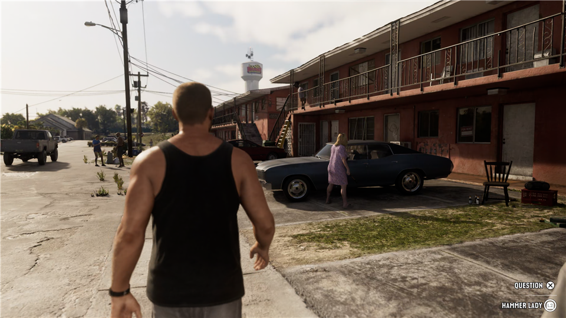
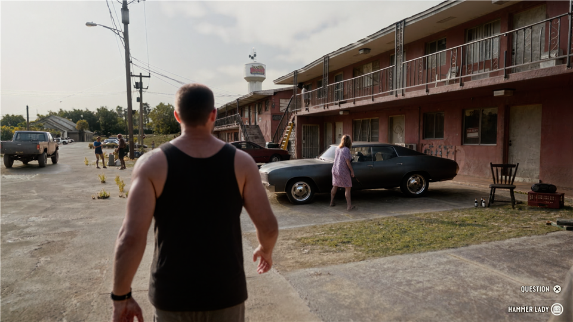

NVIDIA-BASED NEURAL ENHANCEMENT
Look closer.
Explore lighting, texture and detail. Drag the divider to compare.
After Effects
Premiere Pro
Photoshop


OriginalEnhanced01 / 06Courtyard · fabric & skin
Use the slider's arrow keys to compare precisely. Home shows enhanced; End shows original.
Your image. Your balance.
Three neural styles, eight editable presets, intensity, original color and lighting preservation, texture recovery and selective blending. Start gently, then compare the details that matter to your shot.
Explore the controls →